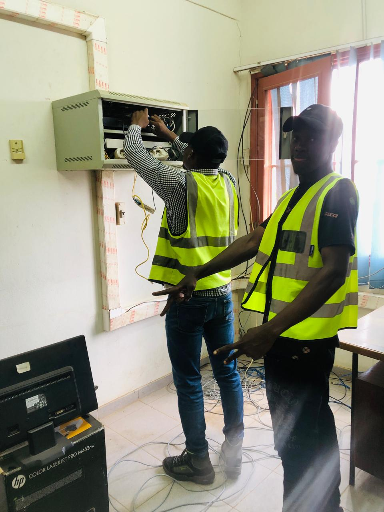
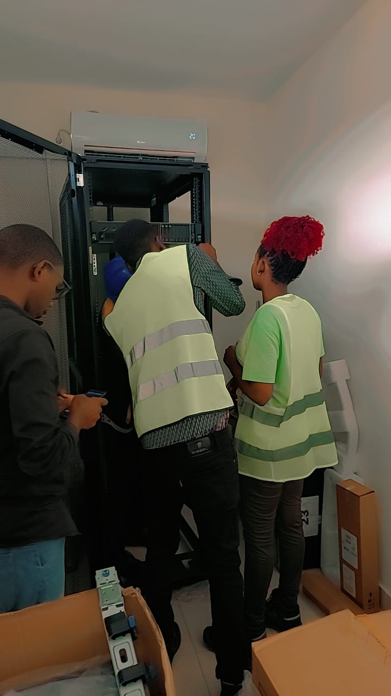
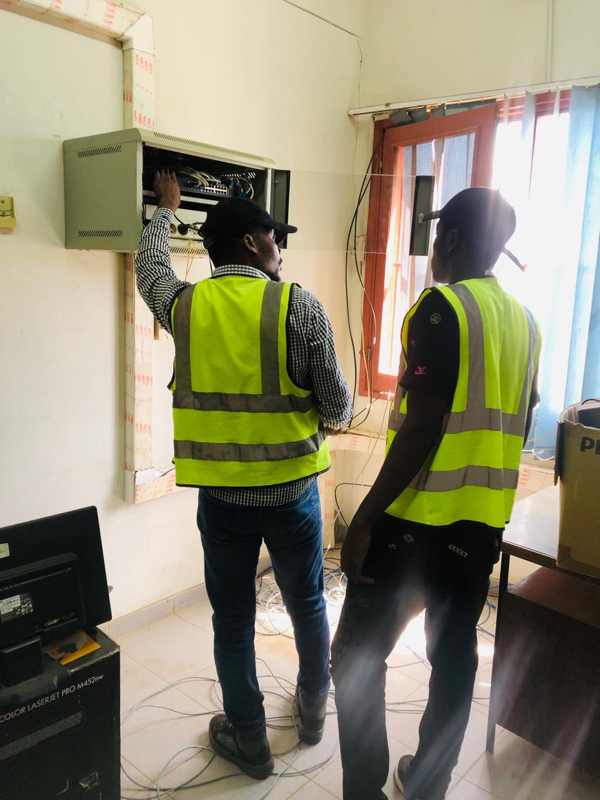

Edução / Formação
- Escola primaria do 1 e 2 grau de unidade-pemba
- 2005-2013
- Escola Secundaria de Pemba
- 2014-2018
- CPRD-Centro Provincial de Recursos Digitais de Pemba
- 2018-2020
- Universidade Rovuma-Nampula
- 2021-2025
Fundamental
Inicio e Conclusão
Ensino Medio
Inicio e Conclusão
Curso Tecnico Profissional
Inicio e Conclusão
Ensino Superior
Inicio e Conclusão
Bom este foi o meu percurso academico, Ate então estas foram as minha conquistas. Todas elas possuem uma certifição como comprovativos de participação e conclusão dos respectivos cursos e formação academica
Estagios
Ao longo da minha formação, tive o previlegio e prazer de poder estagiar. Em alguns locais com isso pude adquirir algumas habilidades e melhor algumas tambem.
Locais de Estagios
- Centro Provincial de Recursos Digitais
- Departamento de Tecnologias de Informçãoe Comunicação da Universidade Rovuma
Duração:1 Ano
12 Meses:Janero de 2020 a Dezembro de 2020
Duração:183 Dias
6 Meses: Março de 2024 a Agosto de 2024
Habilidades
Ao longo da minha formação academica e tecnico profissional, pude desenvolver varias habilidades na area das Tics e inter pessoais, abaixo sito as habilidades adquiridas.
Linguagens de Programação
Linguas
Programa de encriptação e desencriptação de ficheiros
- Pyhton.
Gerando uma chave simetrica

codigo fonte
from cryptography.fernet import Fernet
chave = Fernet.generate_key()
#2 criamos um ficheiro chi.ch e atribuimos a variavel geradora de chaves Fernet.generate_key
with open('chi.ch', 'wb') as file:
file.write(chave)
Criptografando os ficheiro com a chave

codigo fonte
#1 Leitura da chave que esta no ficheiro criado chi.ch que esta na variavel chave
chave = ''
with open('chi.ch', 'rb') as file:
chave = file.read()
#2 Fazemos a litura do dado/ficheiro a encriptar
dado = ''
with open('exemplar CV.txt', 'rb') as file:
dado = file.read()
#3 Encriptando o dado/ficheiro cim o metodo fernet.encript(dado)
from cryptography.fernet import Fernet
f = Fernet(chave)
dado_encriptado = f.encrypt(dado)
#4 Salvamos o dado/ficheiro encriptado em uma variavel dado_encriptado
with open('exemplar CV.txt', 'wb')as file:
file.write(dado_encriptado)
print('Ficheiro encriptado com sucesso \naqui esta o ficheiro:')
print(dado_encriptado)
Desencriptando os ficheiros

codigo fonte
#1 ler a chave do file
chave = ''
with open('chi.ch', 'rb') as file:
chave = file.read()
#2 lendo o dado/ficheiro encriptado da variavel dado_encriptado
dado_encriptado = ''
with open('exemplar CV.txt', 'rb') as file:
dado_encriptado = file.read()
#3 Desemcriptamos o dado/ficheiro com o metodo Fernet mas antes atribuimos a chave au metodo
from cryptography.fernet import Fernet
f = Fernet(chave)
#Desencriptando o ficheiro com_o metodo Fernet.decrypt dentro da variavel dedo_desencriptado que nos criamos
#tribuimos a variavel dado_encriptado como argumento ao metodo f.decrypt()
dado_desencriptado = f.decrypt((dado_encriptado))
print('Ficheiro Desencriptado com Sucesso\nAbaixo os ficheiro encriptado e desencriptados')
print('Ficheiro encriptado\n',dado_encriptado.decode())
print('Ficheiro desencriptado\n',dado_desencriptado.decode())
Links Para Download
- Download de certifição de Ensino Medio
- Download de certifição do Curso Tecnico
- Download de Curiculum Vitae
Download de Projetos Em Python
- Download de Projeto de Criador de QR_code
- Download de Projeto de Encriptação e Desencriptação
imagens do estagio
Centro Cultural & UniRovuma



Montando rack & Conectando os Pcs ao Switch
Como ilustram as imagens, durante o meu estagio, pude instalar e montar um servidor, e tambem montar um rack para a aloção do mesmo. durante este estagio pude adquirir diversas habilidades, habilidades essas que estão a ser uteis e de uma grande valia, não para a minha vida academica mas tambem profissional.
A direita temo a foto da montagem do rack e o desempacotamento do servidor, servidor este que se encontra funcional no Centro Cultural da UniRovuma, foram montados dois servidores neste centro com o proposito de migração de plataforma digital, mais especificamente o web site e servicos de applicação